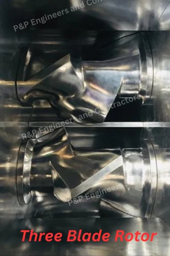

3 Photos Available
35 LTR Intermeshing Rotor Rubber Kneader
Get Latest Price
| Mixing Capacity | 35 Kg |
| Chamber Volume | 100 LTR |
| Main Motor | 75 HP |
| Tilting Method | Hydraulic |
| Rotor Speed (Front/Rear) | 50 RPM |
| Tilting Angle | 120� |
| Tilting Motor | 3 HP |
| Condition | New |
| Country of Origin | Made in India |
Product Description:
The Intermeshing Rotor Kneader is a high-performance mixing machine designed for efficient and uniform processing of rubber. With its intermeshing rotor design, it ensures superior dispersion and consistent quality, making it ideal for applications in rubber industry. Equipped with advanced cooling systems, variable speed control, and a robust build, this kneader delivers precise temperature management and durability for demanding industrial applications.
General Specifications:
- Capacity: 30-35 Kgs/batch
- Rotor Design: Intermeshing rotor type with variable speeds (30-50 RPM)
- Rotor Material: Alloy steel with hard coatings
- Mixing Chamber: Mild steel with anti-wear properties, water/oil cooling
- Temperature Control: Cooling channels for precise thermal management
- Motor and Drive: 75 HP main motor with variable frequency drive (VFD)
- Pressure System: Hydraulic ram with 40-50 Bar pressure capacity
- Discharge System: Hydraulic cylinder operation
- Control System: PLC-based with HMI, recipe storage, automation
- Safety Features: Emergency stop, overload protection, safety interlocks